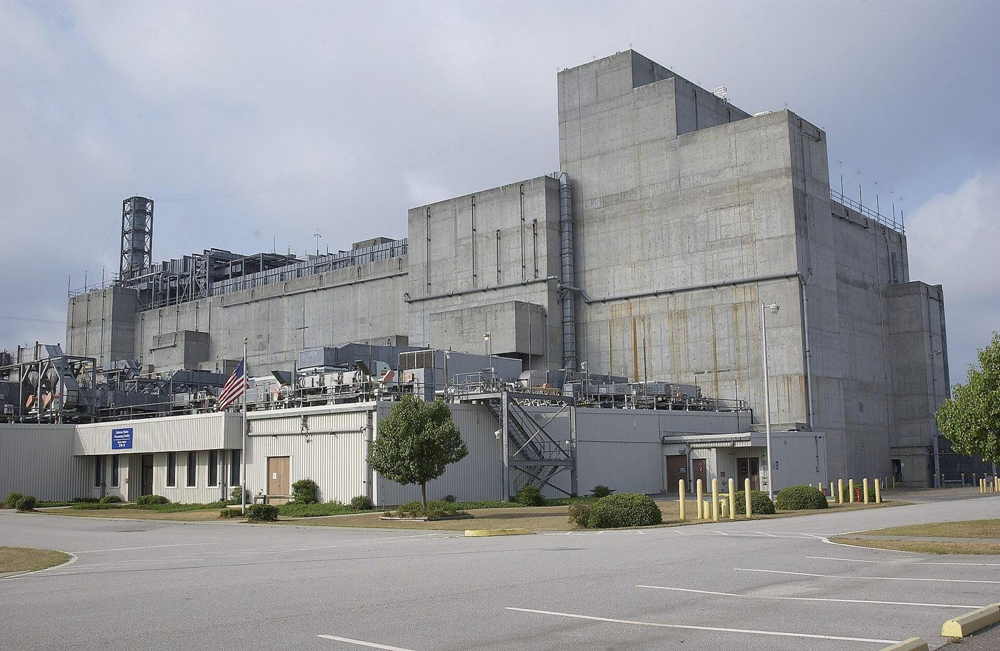

Part 2 of 10 in Chapter 3
The Tanks
The largest legacy was liquid: about 36 million gallons in 49 tanks, roughly 421 million curies (WB: DWPF fact sheet). The Defense Waste Processing Facility, built from 1983 and troubled before it ran (IA: GAO 1992), began turning that waste into glass on March 12, 1996 (WB).

.jpg){kind=link}
Getting the waste into the glass plant was harder. In 1983 DOE chose a process called In-Tank Precipitation to pull radioactive cesium out of the tanks' salt. It was expected to cost $32 million and be finished by 1988. After about a decade and almost half a billion dollars, it was abandoned in 1998 because it gave off large amounts of benzene (DL: House hearing, 2000; WB: GAO).
Its replacement, the Salt Waste Processing Facility, was to be built by 2008 for $900 million; in 2015 DOE's Inspector General reported about $1.4 billion in cost growth and a start no earlier than December 2018 (WB: DOE Inspector General). It poured its 4,000th canister on December 31, 2015, of about 8,000 expected (WB).
Tanks 17 and 20 were closed in 1997, the first in the nation (WB). What could be left in the ground was settled by Section 3116 of the 2005 defense authorization act (WB: govinfo), which Senator Graham said he wrote and which passed by a single vote (WB), and which the National Academies reviewed for Savannah River (IA).
Tanks 18 and 19 followed in 2012 (WB).
In 2018 and 2019 DOE reinterpreted "high-level waste" to turn on how radioactive a waste is rather than where it came from, revising the change after objections from the Nuclear Regulatory Commission, members of Congress and states. Savannah River was its first test: in 2020 DOE decided to send grouted wastewater from the glass plant to a commercial disposal site in Andrews, Texas, beginning with 8 gallons (WB: Federal Register; WB: Federal Register).
Follow this thread, waste and groundwater. Earlier: Chapter 1, Radioactive Releases; Chapter 2, Under the Ground. Continues in Chapter 4, Emptying the Tanks.